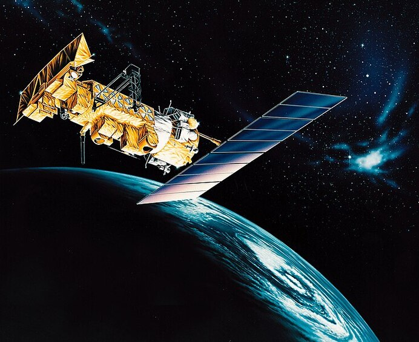

Questi Satelliti trasmesstono tramite il protocollo APT:
un protocollo trasmissivo analogico facilmente ricevibile, tuttavia la risoluzione è molto bassa (4 km/pixel).
Esso è utilizzato da 3 satelliti precendentemente citati
Il NOAA 19 trasmette sulla stessa frequenza del METEOR-M N2, perciò talvolta si possono interferire a vicenda.

Meteor M2-3
I satelliti METEOR sono una serie di satelliti eliosincroni in orbita polare che orbitano attorno alla Terra a circa 800 km dal suolo.
La loro orbita è scelta in modo che passino sulla stessa posizione all'incirca 2 volte alla stessa ora solare ogni giorno.
Due satelliti sono attualmente operativi in modalità LRPT: METEOR-M N°2-3 e N°2-4
METEOR-M N2 è stato disattivato nel gennaio 2023 a seguito di un guasto nel suo sistema di mantenimento dell'assetto,
e METEOR-M N2-2 è attivo solo su HRPT (1,7 GHz) a seguito di una depressurizzazione probabilmente dovuta a una collisione con un micrometeorite o altri detriti spaziali.